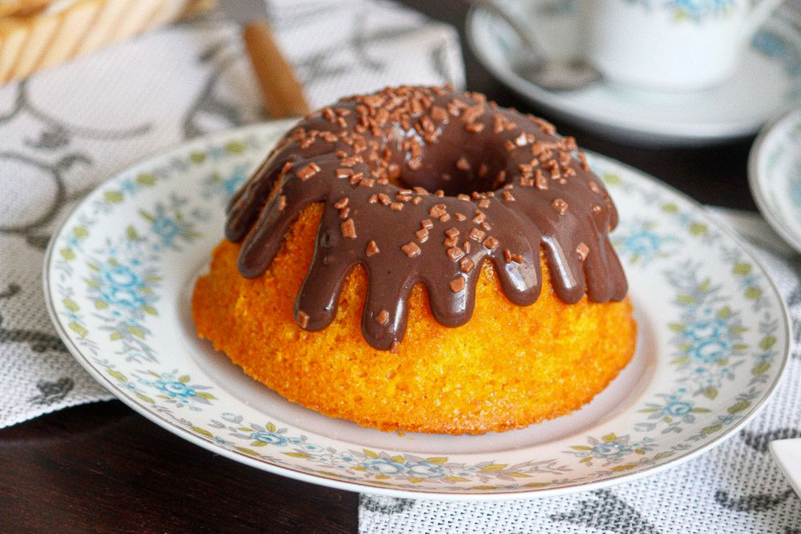
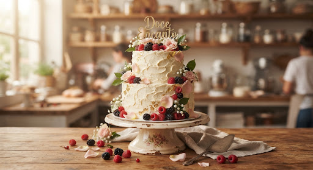
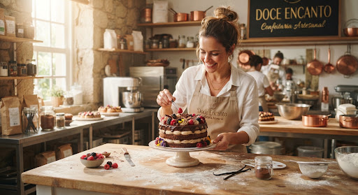

Foto ilustrativaClássico da CasaBolo de cenoura com cobertura de chocolate
O clássico da casa, com calda de chocolate meio amargo.
Valor R$ 55,00
Bolos caseiros fofinhos, recheios generosos e receitas que abraçam. Na Vó Rosa, cada encomenda transforma sua celebração em uma lembrança doce e inesquecível.

Cuidamos dos detalhes para que você aproveite o melhor: compartilhar momentos doces.
Explore os sabores do cardápio e adicione os seus favoritos à sacola. Escolha bolos caseiros, bolos de festa ou docinhos.
✓ Bolos caseiros de 12 fatiasPrepare seu resumo e combine a data, as quantidades e o local de entrega ou retirada com a confeitaria.
✓ Sinal de 50% no pedidoSeu pedido é preparado sob encomenda. Combine a retirada ou aproveite a entrega grátis em até 5 km.
✓ Entrega grátis em até 5 km
Tem sabores que parecem um abraço. Um bolo de fubá com goiabada, o cheirinho da canela, uma calda de chocolate ainda quentinha.
Na Confeitaria Vó Rosa, os bolos caseiros são feitos sob encomenda para acompanhar o café, reunir a família e adoçar as comemorações. Do clássico de cenoura aos bolos de festa, há sempre um sabor para o seu momento.
Clássicos caseiros e combinações para celebrar.
Uma encomenda pensada para compartilhar.
Prepare sua encomenda ou venha aproveitar uma fatia de bolo e um café no balcão.
Rua das Flores, 45
Cidade Exemplo
Terça a sábado: 9h às 19h
Domingo: 9h às 13h
(11) 99999-9999
Envie seu pedido pelo carrinho ou pelo formulário.Todos os produtos podem conter traços de leite, ovos, glúten e castanhas.